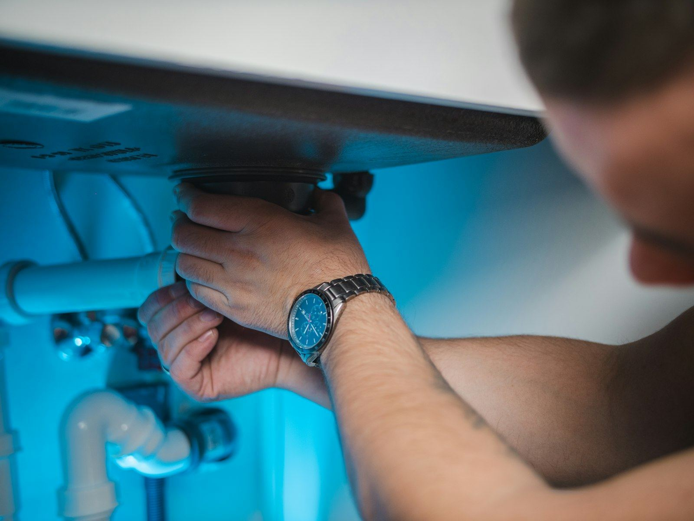

Most water heater trouble can wait for a scheduled visit. A few situations cannot, and telling them apart protects both your home and your family. A tank that has split along a seam does not stop after emptying its own capacity, because the cold supply keeps pushing fresh water in, so an unattended leak can send hundreds of gallons through flooring, drywall, and the rooms below. A temperature and pressure relief valve that keeps discharging is warning you that pressure or heat inside the tank has gone past its safe limit. Water at the faucet hot enough to scald usually points to a thermostat or gas control that has failed in the wrong direction. And any smell of gas near the heater is a safety event first and a repair second. In Downers Grove, IL, these are the calls we treat as true emergencies.
Before anything else, rule out gas. A rotten-egg odor near the heater means everyone leaves the house, nobody operates switches or appliances on the way out, and the call goes to your gas utility or 911 from a safe distance. If there is no gas smell, focus on stopping the water: close the cold supply valve at the top of the heater, or the main shutoff if the heater valve is seized. Next, cut the energy to the unit, turning a gas control to OFF or switching off the dedicated breaker on an electric model, as long as you are standing on dry ground. Leave the relief valve alone if it is discharging. Plugging it removes the last safeguard against a tank that is overheating. Once things are isolated, call (630) 239-9844 for help.
When you reach Downers Grove Water Heater, we start by asking what you see, hear, and smell, and we confirm the shutoffs are holding before anyone leaves the shop. We dispatch as quickly as we can and give you an honest arrival window rather than a promise we cannot keep. Our trucks carry the parts behind most urgent failures, including relief valves, thermocouples, flame sensors, heating elements, thermostats, drain valves, and supply connectors, so many emergencies end with a repair on the spot. When the tank itself has failed, patching it would not be honest work, so we explain replacement options, secure the area, and restore hot water as soon as the new heater is in. For emergency water heater repair in Downers Grove, call (630) 239-9844.
Most of our service calls are for Water Heater Repair in Downers Grove. That's the place to start for most homes.

When to Call for Emergency Water Heater Repair
Catching a symptom early is often the difference between a quick part swap and a tank that gives out on the garage floor. Watch for these telltale signs that professional help is needed:
- Sudden loud knocking or boiling sounds coming from inside the tank
- Black soot or heat discoloration around the burner door or draft hood
- Tap water hot enough to burn, even at the usual setting
- Any gas odor around the heater, which means getting out and calling the gas company before calling us
- No hot water at all, even after waiting for the tank to recover
- The relief valve on the side of the tank dripping, hissing, or discharging
- A puddle under the tank that keeps growing
- A breaker that trips every time the electric heater tries to run
Don't Wait for a Total Failure
Most water heater failures start small: a popping sound from sediment, a damp spot under the drain valve, or a shower that goes lukewarm a few minutes sooner each week. If you notice any of these signs, contact Downers Grove Water Heater at (630) 239-9844 for a prompt inspection.
Talk to Us About Emergency Water Heater Repair
Call Downers Grove Water Heater for fast, reliable service.
Call (630) 239-9844 NowWhat Homeowners Ask Us Most
Why Professional Emergency Water Heater Repair Matters
Emergency calls combine electricity, gas, heat, pressure, and water, which is exactly the mix that makes do-it-yourself work risky. An electric heater sits on a 240-volt circuit that should never be handled while standing in water. A gas heater has fuel piping, a burner, and a vent that can leak exhaust into the room if something is out of place. The tank itself holds scalding water under pressure, and a discharging relief valve is signaling an unsafe condition that must be fixed at the source, not muted. Blocking the discharge pipe, relighting next to a gas odor, or forcing a rusted connection are all common and dangerous mistakes.
Why call a technician instead of improvising? Certainty and safe sequencing. We verify the shutoffs, check for gas leaks with proper tools, and confirm the area is safe for electrical work. Then we find the root cause. A discharging relief valve often means high street pressure or no room for thermal expansion; a puddle might be a drain valve, a dielectric fitting, condensation, or a failed tank; a cold house may trace back to a thermocouple, an element, or a tripped high-limit switch. No two of those share a fix. We repair what can honestly be repaired, and when the tank is the problem, we explain your replacement options without pressure.
How We Handle Emergency Water Heater Repair
We work through a clear, repeatable process so you always know what's happening and what it will cost. Here's what you can expect when you choose Downers Grove Water Heater:
Make It Safe by Phone
On the call, we check for any gas odor first, then guide you to the cold-water valve and the heater's gas control or breaker so the damage stops growing while help is on the way.
Dispatch & Site Safety
We send a technician with a stocked truck and give you a realistic time frame. The first job on arrival is confirming the heater is isolated and the area is safe to work in.
Repair or Honest Replacement
If a component failed, we replace it right there. If the tank itself is leaking, we explain why it cannot be patched and lay out replacement options with clear pricing.
Safe Restart
We refill the tank, purge air from the lines, restart the heater, check every joint for leaks, confirm the relief valve seats, and set the temperature to a safe 120F.
Questions About Emergency Water Heater Repair?
Our technicians can assess your water heater and recommend the option that actually makes sense.
Call (630) 239-9844 NowSimple Ways to Extend Your Water Heater's Life
A few preventive steps can help you avoid a cold shower or a wet floor down the road. Put these technician-approved steps to work at home:
- Flush sediment from the tank yearly, since buildup overheats the bottom and speeds corrosion
- Ask about a drain pan and drain line, especially for heaters in attics, closets, or above finished rooms
- Set the temperature around 120F, which protects against burns and slows tank wear
- A simple water sensor on the floor beside the tank can warn you hours earlier
- Check the temperature and pressure relief valve each year so you know it will work when it matters
- Find and label the cold-water shutoff at the heater and the main house valve now, before you ever need them
- Leave clear space around a gas heater and never store flammable liquids nearby
Doing It Yourself vs. Hiring a Technician
Some simple checks are fine to do yourself, but most water heater repairs benefit from professional tools, training, and experience. Here's a comparison:
| Consideration | DIY Attempt | Professional Service |
|---|---|---|
| Gas Safety | Lingering near a possible leak | Leak detector and soap test after the area is cleared |
| Stopping the Leak | Unsure which valve to close | Water stopped and drain-down done properly |
| Relief Valve | Valve capped or plugged, a dangerous move | Cause found: pressure, expansion, or overheating |
| Electrical Hazard | Resetting breakers while the floor is wet | Power tested off and area made dry and safe |
| Finding the Cause | Symptom treated, source unknown | Tested, not guessed |
| Result | Fix that may not hold overnight | Safe restart, verified dry and working |
Get Emergency Water Heater Repair Help Today
Cold showers and damp floors don't get better on their own. Downers Grove Water Heater can have a technician headed your way soon.
Tap to Call (630) 239-9844Emergency Water Heater Repair Across the Downers Grove Area
We bring emergency water heater repair to homes and businesses in town and across the nearby communities. Pick your area to see local details.